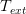
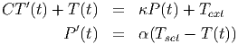
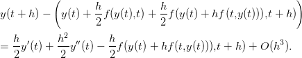

Exemplo 10.5.1. O método de Euler melhorado é um exemplo de Runge-Kutta de segunda ordem

Os métodos de Runge-Kutta consistem em iterações do tipo:
Os coeficientes são escolhidos de forma que a expansão em Taylor de  e  coincidam até ordem .

 são duas
aproximações diferentes para a inclinação no meio do intervalo.
são duas
aproximações diferentes para a inclinação no meio do intervalo.